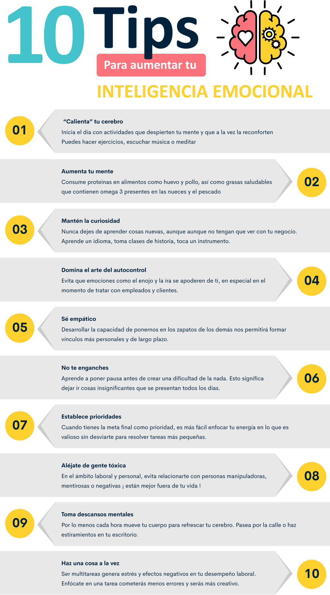
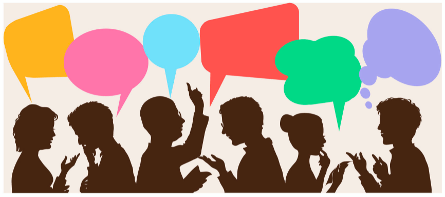
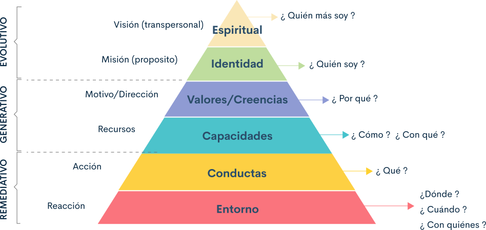

1. Dignidad como fundamento de la cultura humana
La convivencia como sociedad ha dispuesto un orden y normas que permitan una sana convivencia mundial.
1.1 Concepto
La definición del concepto de dignidad humana tiene diferentes perspectivas de análisis que incluyen versiones mediadas por el tiempo o época y punto de vista que puede ser filosófico, religioso, social, humanista o jurídico.
Veamos algunas definiciones a continuación:
Desde un punto de vista humanista, el siguiente video explica el concepto.
Por su parte, desde un punto de vista filosófico, Kant, traducido por García, plantea lo siguiente:
El concepto de dignidad humana tiene un carácter adscriptivo. Expresa y atribuye una evaluación positiva; en este sentido, predicar la dignidad de X es lo mismo que predicar su humanidad. Adscribirle dignidad al ser humano viviente es algo así como colocarle una etiqueta de valor no negociable, irrenunciable, ineliminable e inviolable, que veda todo intento de auto o heterodeshumanización. (1983, pág. 44)
En general se puede rescatar que la dignidad humana hace parte inherente del ser humano, desde sus diferentes posturas se coincide en afirmar que el ser humano es digno por el hecho de ser persona.
Tanto la “dignidad humana” como los “derechos humanos” encierran conceptos de universalidad, es decir que son valores idénticos comunes a toda la familia humana y que los Estados deben reconocer y garantizar. Por esta razón, el artículo 1° de la Declaración Universal de Derechos Humanos dice: “Todos los seres humanos nacen libres e iguales en dignidad y derechos y dotados como están de razón y conciencia, deben comportarse fraternalmente los unos con los otros”.
El reconocimiento de la dignidad humana se encuentra transversalmente en todo el sistema internacional de los derechos humanos y en el derecho humanitario. Por consiguiente, la dignidad humana se ha desarrollado como un valor central no sólo en el derecho internacional de los derechos humanos sino también en el constitucionalismo moderno.
1.2 Contextualización desde los derechos humanos universales y el derecho internacional humanitario.
Para empezar a hablar sobre la dignidad como fundamento de la cultura humana, debemos remitirnos a los derechos humanos, para ello vamos a hacer un recorrido sobre las relaciones entre los términos. Después de la Segunda Guerra Mundial, la dignidad aparece como núcleo central en la Declaración Universal de los Derechos Humanos en 1948, aceptándola de la siguiente manera: “la libertad, la justicia y la paz en el mundo tienen por base el reconocimiento de la dignidad intrínseca […] de todos los miembros de la familia humana” (…) «La fe de las Naciones Unidas en la dignidad y el valor de la persona humana».
Declaración Universal
de los Derechos
Humanos en 1948
En consecuencia, inicia una serie de discusiones y movimientos en pro de mejorar las condiciones sociales de las personas que se encuentran en medio de un conflicto armado, lo cual llevó a establecer hacia 1864 el Derecho Internacional Humanitario (DIH) y el Derecho Internacional de los Derechos Humanos, que son dos normativas diferentes, pero complementarios. Ambos se ocupan de la protección de la vida, la salud y la dignidad de las personas, sin embargo, el Derecho Internacional Humanitario es aplicado en situaciones de conflicto armado, y el Derecho Internacional de los Derechos Humanos está vigente en todo momento, tanto en tiempo de paz como de guerra.
Con el fin de garantizar los derechos de las personas civiles, los prisioneros, enfermos y heridos en momentos de guerra, se realiza una serie de modificaciones que incluyen mejoras a las normas establecidas, con cuatros tratados de Ginebra en 1949 y un Protocolo adicional de 1977, consolidando la normativa básica de la dignidad humana en estamentos jurídicos.
Cuatros tratados de
Ginebra en 1949 y un
Protocolo adicional de
1977
El concepto de Derechos Humanos se puede relacionar con la afirmación de la dignidad de la persona frente al Estado, pues, al reconocer a la persona como ser humano, sólo por el hecho de serlo, implica que se le reconozca como portadora de estos derechos.
Como vemos a través del tiempo y las normas establecidas mundialmente para garantizar el respeto a la vida del ser humano, coinciden en trasladar a todas las constituciones democráticas de cada país, la noción de dignidad humana como base esencial para el respeto de los derechos humanos, resaltando que los derechos no se otorgan desde el poder estatal, sino que cada Estado debe garantizar su pleno ejercicio.
Recurso Clave: el siguiente vídeo relaciona de manera gráfica lo descrito anteriormente, los invito a verlo.
1.3. La Dignidad humana desde la constitución política – Autonomía (P3)
Este derecho a la dignidad humana comprende tres aspectos fundamentales, mencionados en la cartilla de los
Derechos a la salud de la Defensoría del Pueblo:
|
El primero de ellos es la autonomía o la posibilidad de elegir un plan de vida para desarrollarse según su determinación. |
El segundo aspecto es la existencia de condiciones físicas que le permitan a una persona establecer su autonomía. |
La última es la no renuncia a los principios de integridad física e integridad moral. |
|---|
Según lo anterior, toda persona es libre de elegir cómo quiere vivir, sin recibir, así como lo dice el tercer apartado, bajo un principio de integridad física y moral. Es decir que nadie puede humillar, ni atacar simplemente por la forma en que ha decidido vivir.
La Corte Constitucional, mediante la Sentencia T-881/02, ha determinado que el Derecho a la vida digna y dignidad
humana en Colombia debe regirse por lo siguiente:

La dignidad humana entendida como autonomía o como posibilidad de diseñar un plan vital y de determinarse según sus características.
La dignidad humana entendida como ciertas condiciones materiales concretas de existencia. Y la dignidad humana entendida como intangibilidad de los bienes no patrimoniales, integridad física e integridad moral.
Teniendo en cuenta lo anterior los tres aspectos son:
Vivir como quiera
Vivir bien
Vivir sin humillaciones
La Corte Constitucional Colombiana, definió de esta forma a la Dignidad Humana,
en la sentencia T 881 de 2002:
Una síntesis de la configuración jurisprudencial del referente o del contenido de la expresión “dignidad humana” como entidad normativa, puede presentarse de dos maneras:
A partir de su objeto concreto de protección y a partir de su funcionalidad normativa. Al tener como punto de vista el objeto de protección del enunciado normativo “dignidad humana”, la Sala ha identificado a lo largo de la jurisprudencia de la Corte, tres lineamientos claros y diferenciables: (i) La dignidad humana entendida como autonomía o como posibilidad de diseñar un plan vital y de determinarse según sus características (vivir como quiera). (ii) La dignidad humana entendida como ciertas condiciones materiales concretas de existencia (vivir bien). Y (iii) la dignidad humana entendida como intangibilidad de los bienes no patrimoniales, integridad física e integridad moral (vivir sin humillaciones).
Por otro lado, al tener como punto de vista la funcionalidad, del enunciado normativo “dignidad humana”, la Sala ha identificado tres lineamientos: (i) la dignidad humana entendida como principio fundante del ordenamiento jurídico y por tanto del Estado, y en este sentido la dignidad como valor. (ii) La dignidad humana entendida como principio constitucional. Y (iii) la dignidad humana entendida como derecho fundamental autónomo.
Sentencia T
881 de 2002:
2. Habilidades para la vida y la convivencia
En 1993 la División de Salud Mental de la Organización Mundial de la Salud (OMS) lanzó formalmente la Iniciativa Internacional para la Educación en las Escuelas de Habilidades para la Vida, con el propósito de difundir la enseñanza de un grupo genérico de destrezas psicosociales, consideradas importantes en la promoción de la competencia psicosocial, y a las que llamó “habilidades para la vida”. (P5) Las diez habilidades que propuso fueron: toma de decisiones, solución de problemas, pensamiento creativo, pensamiento crítico, comunicación efectiva, relaciones interpersonales, autoconocimiento, empatía, manejo de emociones y manejo del estrés.
Esta iniciativa de la OMS tiene dos premisas:
En primer lugar, en la importancia que tiene la competencia psicosocial en la promoción de la salud, en términos del bienestar físico, mental y social de las personas. En segundo lugar, en que, como consecuencia de los cambios sociales, culturales y familiares de los últimos años, no puede asumirse que el aprendizaje de las destrezas psicosociales que realizan los niños y las niñas de hoy sea suficiente, por lo que propuso que la enseñanza de estas habilidades tuviera un lugar específico en el contexto de la educación formal.
A partir de lo anterior, vamos a retomar 5 de estas habilidades:
|
1 |
Empatía |
|
2 |
Inteligencia emocional |
|
3 |
Comunicación asertiva |
|
4 |
Resolución de conflictos |
|
5 |
Reconocimiento de aspectos personales a transformar |
2.1. Empatía
Esta habilidad socioemocional se ha convertido en una de las más mencionadas, debido a la importancia y necesidad de aplicación en la vida cotidiana. No obstante, llevarla a la acción considera grandes desafíos cognitivos, emocionales y psicológicos.
A continuación, presentamos un acercamiento para entender la empatía y las posibilidades de aplicarla.
Goleman (1995) considera la empatía como una habilidad social, desarrollada como la capacidad de reconocer sentimientos, necesidades, realidades e intereses de los demás.
¿Y usted es empático?
La empatía más que una palabra de moda es una necesidad de comprender la realidad del otro. Es cuestión de observación, práctica e interés, más que una recomendación.
A continuación, reflexione a través de las imágenes ¿cuánta empatía siente en cada situación?
Reflexione en las diferentes situaciones con quién siente empatía y con quién no.
Mujer cansada por los tacones
Mujer maltratada
Maltrato animal
Falta de hogar
Falta de garantías sociales
Persona llorando en la calle
Persona a la que roban
Las situaciones culturales cambian las costumbres, actitudes y comportamientos, lo cual nos lleva a pensar que en ocasiones no podemos sentir empatía; sin embargo, no necesariamente es así. Es importante reconocer y comprender la diferencia como característica innata de la sociedad, en la que debo respetar la perspectiva del otro, sin dejar de lado la mía, a esto se le denomina alteridad.
Recurso clave.
¡póngase cómodo y traiga crispetas! El siguiente video realiza una reflexión sobre la empatía en esta época de distancia social. Los invitamos a verlo en un momento que tenga.
2.2 Inteligencia emocional
Tradicionalmente reconocemos la importancia del manejo de nuestras acciones, relacionando a quien maneja la lógica, un buen razonamiento lingüístico o lógico-matemático como una persona inteligente, capaz y en muchas ocasiones relacionada con el éxito. La inteligencia, ese instinto razonado que nos permite relacionar pensamientos, unos con otros, para obtener pensamientos nuevos nace y se hace, dependiendo de la herencia y del ambiente o contexto cultural; sin embargo, en los últimos años se ha empezado a considerar valioso el manejo de las emociones, considerándolo como otro tipo de inteligencia, la emocional, la cual enfatiza en la capacidad para manejarnos con nosotros mismos y con los demás.
Science Bulletins: Mapping Emotions in the Body |
Feelings are often associated with physical reactions: terror can send chills down your spine, and love can leave you weak in the knees. A recent study has linked specific emotions to physical sensations. Researchers tested emotional responses in hundreds of subjects and then created maps identifying locations in the body where emotions cause physical changes.Hábitos emocionales
Ya reconociendo la amplia capacidad de aprendizaje que tenemos las personas se destaca una capacidad particular de la inteligencia, la cual se debe desarrollar como seres sociales que somos y que realmente ayuda mucho en el proceso de adaptación al entorno. Recomendamos los siguientes consejos para aumentar su inteligencia emocional y convertirlos en un hábito.
2.3. Comunicación Asertiva
La comunicación asertiva: es una forma de expresión honesta, directa y equilibrada, que tiene como objetivo comunicar nuestros pensamientos, intereses y derechos sin la intención de perjudicar a nadie. La asertividad busca poner en equilibrio dos extremos de la comunicación:
La comunicación pasiva: es la que evita el conflicto, optando por no expresar molestias y desacuerdos. Con este tipo de comunicación los problemas o conflictos no se solucionan, se ignoran hasta que son imposibles de manejar.
La comunicación agresiva: es la que emplea la ira o los reproches, generando conflictos, lo cual impide encontrar soluciones a los problemas.
Sin embargo, el estilo de comunicación asertivo permite expresar y defender sus criterios y puntos de vista, se caracteriza por el equilibrio entre la elocuencia y el respeto, de ahí que se le haya adjudicado a este término el significado de “expresión de los derechos y sentimientos personales”.
Mire el siguiente video e identifique en dónde está la comunicación agresiva, pasiva o asertiva.
Es importante tener en cuenta que dependiendo de la situación se utiliza uno o varios estilos de comunicación, por ello reconozca la posibilidad de encontrar un punto intermedio en el que cuando envíe un mensaje sea claro, conciso y no perjudique a la otra persona.
La comunicación asertiva cumple además con ciertos requisitos emotivos, psicológicos y pragmáticos que la caracterizan, como lo son:
Claridad: expresa sus necesidades, sentimientos y deseos de manera respetuosa, apropiada y clara. Para lograr esto se aconseja mirar a la persona directamente a los ojos, sin recurrir a risas o sarcasmos.
Contexto: es importante que elija el lugar para tener una conversación importante. Las personas suelen mostrarse más dispuestas en un lugar apacible, tranquilo y seguro, que en otro ruidoso y donde se les presente distracciones.
Tono de la voz: el tono de voz y la manera en que pronunciamos las palabras influyen en nuestra comunicación. A las personas les agota y desanima escuchar a alguien que habla a muy alta velocidad, susurra o por el contrario, todo lo dice a gritos.
Gestualidad: prestar atención a los gestos que empleamos porque pueden resultar ofensivos o provocadores. Estas expresiones pueden reforzar lo dicho o transmitir lo contrario y confundir al receptor.
Reciprocidad: trate de invertir el mismo tiempo que habla en escuchar a la otra persona para no transmitir indiferencia, por tanto, de la misma manera en que se procura hacer entender nuestros criterios y opiniones, se deben escuchar y respetar criterios e ideas ajenas.
Algunos consejos para comunicar asertivamente
Este estilo de comunicación juega un papel fundamental para tener una relación saludable con las personas que nos rodean, ya sea en la vida cotidiana o en el entorno laboral, ya que ayuda a proyectar confianza, resolver diferencias o conflictos que se presenten y crear un ambiente agradable. Aquí le vamos a presentar algunos elementos que debemos tener en cuenta para desarrollar esta habilidad:
|
CONSEJOS |
VENTAJAS |
|---|---|
|
Comunica sin juzgar Al momento de comunicar separe sus prejuicios de sus comentarios y opiniones, es importante ser lo más objetivo posible. |
Ventajas de ser asertivo Como se ha mencionado, este estilo de comunicación nos permite expresar nuestras opiniones, respetando a su vez las opiniones de los demás, aquí comentamos algunas de las ventajas más significativas: |
|
Identifique y exprese sus sentimientos En este punto, la clave es describir sus sensaciones internas. |
Sensación de control Permite sentirnos con el poder y la capacidad de decidir. |
|
Encuentre su necesidad no satisfecha Uno se siente bien cuando todas sus necesidades están cubiertas, sus sentimientos son creados por sus necesidades. |
Mejora la autoestima Permite recuperar el control de las situaciones, al defender nuestras opiniones y expresar nuestras emociones. |
|
Haga una petición activa y concreta Este último paso se relaciona con el anterior, primero identifique qué lograría satisfacer su necesidad y luego comunique de manera clara qué es lo que quiere de los demás. |
Mejora la comunicación con los demás La asertividad se basa en una comunicación eficiente, evitando generar conflictos. |
|
Contribuye a gestionar las emociones Expresar y atender nuestras emociones nos permite comunicarnos mejor y fortalecer las relaciones interpersonales. |
|
|
Resolver conflictos La asertividad permite resolver conflictos de manera eficiente, evitando que los problemas se incrementen. Esto se debe porque expresamos nuestras necesidades. |
2.4. Resolución de conflictos
La presencia de conflictos y su solución genera un aprendizaje personal y grupal. Concebir un conflicto como algo positivo y remediarlo de modo que constituya una experiencia de aprendizaje para las personas implicadas no es un reto fácil, y menos aún, cuando en el inconsciente social se relaciona con algo negativo a través de los años. Por ello, no es preciso hablar de crecimiento personal sin incluir al conflicto como un compañero inseparable, pues la vida cotidiana transcurre entre una gama de situaciones más o menos problemáticas. Por tanto, el conflicto en sí no es ni malo ni bueno; lo que importa es la forma en que se maneje.
Técnicas o métodos para la resolución de conflictos
Negociación
Esta es una forma de enfrentar los conflictos buscando soluciones, en donde los implicados tienen autonomía para realizar el proceso o no. Es necesario tener en cuenta los siguientes pasos:
1. Las partes acuerdan negociar.
2. Realizan una exploración de sus intereses, puntos de vista y posiciones.
3. Encuentran los puntos comunes.
4. Proponen opciones en las que todos resulten beneficiados.
5. Evalúan las opciones y seleccionan las mejores.
6. Elaboran un acuerdo que satisface a ambas partes. (Banz, 2008)
Mediación
Este método es utilizado cuando las partes no logran ponerse de acuerdo por sí solas para solucionar el conflicto; por tanto, se involucra la intervención de un tercero neutral, denominado mediador, quien no tiene poder de decisión y su función principal es lograr que las partes se encuentren entre sí, expresen sus puntos de vista, construyan el acuerdo y lleguen a una solución beneficiosa para ambos.
La mediación se realiza de acuerdo con los siguientes pasos:
1. El mediador ofrece la instancia de mediación que puede ser aceptada o rechazada por las partes.
2. El mediador explica cómo se realizará el proceso y garantiza la confidencialidad.
3. El mediador invita a cada uno a exponer el problema de modo respetuoso, sin alusiones descalificadoras del otro. El otro no puede interrumpir.
4. Una vez expuestas las posiciones, se invita a la construcción de una solución conjunta y se busca la colaboración entre las partes.
5. Construida la solución, se establece un acta de acuerdo entre las partes, la cual es firmada por ambos.
Si desea profundizar en cada estrategia, revise con mayor detalle el siguiente manual de resolución de conflictos.
2.5. Reconocimiento de aspectos personales a transformar
Crecer como persona es un proceso que está relacionado con el autoconocimiento, con la capacidad de conocerse y valorarse a sí mismo, tomar conciencia de las motivaciones, necesidades, valores, pensamientos y emociones que definen la identidad propia, y sus efectos en el comportamiento de los demás y el entorno, de igual forma, tomar conciencia sobre las causas, desventajas y posibles estrategias para superar comportamientos no deseados.
Cuando se llega a este punto es necesario hacer algunos cambios y reconectarse de nuevo con nuestra propia identidad, esta transformación comienza con nosotros mismos, esto requiere hacer una autorreflexión, ser conscientes de nuestras capacidades, y comprender que exige compromiso, tiempo, energía y estrategias claras y realistas.
En este momento es importante hacerse varias preguntas:
¿Está en el lugar que quiere estar?
¿Qué creencias lo limitan?
¿Cuáles son sus fortalezas y debilidades?
¿Sabe lo que quiere y lo que no quiere?
¿Qué es lo que más ama y qué hace respecto a ello?
¿Qué es lo que más le emociona de su vida?
¿Qué lo motiva para continuar viviendo?
¿Ha dado lo mejor de sí mismo?, ¿podría haberlo hecho mejor?
¿Hay algo que le gustaría hacer y que nunca se ha decidido a hacer?, ¿qué se lo impide?
Si las respuestas a estas preguntas generan incomodidad y/o no le gustan, piense cómo puede cambiarlo, teniendo en cuenta:
¿Qué debo cambiar de mí?
¿Qué debo cambiar de mi entorno?
¿Qué debo cambiar en mis relaciones?
El camino hacia el bienestar y el crecimiento personal hace referencia a una serie de actividades que se construyen a lo largo de la vida y que pueden modificarse en cualquier momento, esto nos invita a empoderarnos frente a la vida, siguiendo nuestros propios sueños.
Pero ¿qué podemos hacer para transformar nuestra vida?, ¿qué acciones podemos llevar a cabo para posibilitar un cambio hacia el bienestar y la autosatisfacción? Veamos algunas claves que podemos tener en cuenta:
3. Proyecto de vida de acuerdo con los criterios de dignidad, respeto.
3.1. Sentido de vida
Como se ha mencionado con anterioridad, las relaciones personales, de autorreconocimiento, las aptitudes personales, están entrecruzadas constantemente con la forma en que interactuamos con el mundo.
El autoconocimiento como herramienta para gestionar las metas propias e institucionales está ligado al sentido de vida que cada persona determina. Corresponde al propósito que cada ser humano encuentra o define para su vida, es completamente armonizable a la vocación, al carisma del quehacer o la disciplina que cada persona desempeña. Entender, establecer, determinar, definir su propio propósito de vida potencializa la posibilidad de reconocerse en tanto a sus propósitos, metas o sueños, y potencializa las probabilidades de reconocer bajo los mismos criterios a los demás.
Cuando el sentido de vida se encuentra alineado directamente con el papel o labor desempeñada a diario existe mayor posibilidad de establecer metas comunes y cumplirlas, trabajar por el bien propio y común, generando impactos positivos, con mayor recordación y ofreciendo una respuesta comprometida con la vida misma. En este sentido, las orientaciones de vida hacia el respeto y dignidad humana deben ser pilares fundamentales en el proyecto de superación propio o personal, profesional y familiar.
El planteamiento personal puede encontrar su fundamento en la necesidad que tiene cada persona de encontrar un sentido a su propia existencia. No es la vida la que nos entrega ese significado, sino que precisamente cada persona tiene el enorme desafío de encontrarlo frente a su propia existencia.
Con las decisiones y las acciones que adoptemos y realicemos configuramos un revelador sentido de vida. La vida nos interpela, nos cuestiona y nos desafía en cada instante de nuestra existencia para que le demos respuesta.
El sentido que le damos a nuestras acciones y planes permite orientarnos hacia entender la razón de nuestra existencia, para qué vivimos y cuál es el propósito, este último forma parte fundamental del proceso de crecimiento personal que cada ser humano debe explorar para diseñar su propio futuro.
¿Y su sentido de vida es?
A continuación, lo invitamos a participar del siguiente ejercicio.
Es un test que le permitirá reflexionar sobre la definición de su sentido de vida. El resultado es para usted, posiblemente no es el que usted cree.

¿Y su sentido de vida es?
A continuación, lo invitamos a participar del siguiente ejercicio. Es un test, que le permitirá reflexionar sobre la definición de su sentido de vida. El resultado es para usted, posiblemente no es el que usted cree.
Iniciar3.2 Metas propuestas que estén en relación con principios y valores
Piense un poco sobre sus proyecciones visualizando el siguiente video:
Atrévase a soñar -plan de vida |Matti Hemmi. 24 mar de 2013. Publicado por: Yinknowation video:
Un proyecto de vida es un elemento importante para darle un mayor sentido a la vida, además le permite tener claro los valores fundamentales que rigen su vida. Es una herramienta que permite estructurar su mente y su existencia para crear un esquema de lo que realmente quiere conseguir.
Algunas veces nos preguntamos ¿cómo me imagino dentro de algunos años?, ¿qué es lo que quiero alcanzar?, ¿qué es lo que me hace feliz?, ¿cómo lograr todo lo que me propongo?, estas preguntas nos permiten reflexionar hacia dónde nos dirigimos, de igual forma, nos aclara el camino sobre lo que queremos, dónde estamos y a dónde queremos llegar.
Para elaborar el proyecto de vida tomaremos algunas orientaciones de la Programación Neurolingüística (PNL), que plantean hacer uso del modelo de niveles neurológicos propuesto por Robert Dilts (s.f.), el cual señala que toda experiencia humana puede analizarse a partir de seis niveles neurológicos:
Niveles Neurológicos
Cada uno de estos niveles plantea preguntas que nos permiten reflexionar sobre los aspectos que hacen parte de su vida personal (interior), involucrando los cuatro primeros niveles y los aspectos que están relacionados con el exterior, es decir, los últimos dos.
Reflexione sobre cada una de las siguientes preguntas, esto le permitirá planear su proyecto de vida.
Nivel 1: Espiritualidad.
¿Quién soy ante lo trascendente? (Dios, el Universo o lo que yo considere trascendente)
¿Qué tan importante es para mí la creencia en Dios o en algo que me trasciende?
¿Cómo deseo que esta relación con la divinidad se exprese en mi vida diaria?
¿Me considero invitado a algo por Dios?
Si no creo en Dios, ¿creo en algo que me trasciende, como el Universo en su totalidad?
Nivel 2: identidad.
¿Quién soy como individuo en este aquí y en este ahora?
¿Quién quiero ser? Puede considerar sus diferentes roles: adolescente, joven, adulto, hombre/mujer, padre/madre, hijo/hija, estudiante, trabajador, ciudadano, jubilado, viudo/a.
En este nivel es parte importante un sentido de misión personal: ¿tiene definido un sentido de misión en esta experiencia humana?
Nivel 3: valores, creencias, actitudes.
¿Qué valores deseo expresar?
¿Qué actitudes deseo asumir en mi vida?
¿Qué creencias deseo fortalecer y cuáles deseo cambiar?
Nivel 4: capacidades.
¿Qué habilidades o capacidades deseo desarrollar para aplicarlas en mi actuar cotidiano?
¿Qué aptitudes son fáciles para mí, casi naturales?, es decir, ¿para qué soy muy bueno?
¿Qué capacidades he desarrollado con disciplina y esfuerzo?
Nivel 5: acciones y comportamiento.
¿Cómo quiero actuar cada día?
¿Qué tipo de actividades deseo realizar o deseo dejar de realizar cada día?
¿Cómo quiero comportarme específicamente cada día de mi vida?
Nivel 6: medio ambiente.
¿Dónde quiero estar?
¿Con quiénes deseo convivir?
¿Cómo quiero relacionarme con el medio ambiente en el que me desenvuelvo?
3.3 Convivencia
Hacer un proyecto de vida incluye preguntarse cómo y con quién vivir, nos damos cuenta de que en el transcurso de nuestra vida cambiamos varias veces el estilo de convivencia, por ejemplo, se pasa de vivir en una familia extensa a vivir en solitario o de compartir apartamento con amistades a compartirlo con una pareja o hijos.
Contexto social nos muestra que la familia, las relaciones interpersonales y las condiciones económicas, influyen en la elaboración del proyecto de vida, que la convivencia es una construcción colectiva, donde se manifiestan las dinámicas de las relaciones con las que el ser humano se enfrenta a diario.
De esta manera nos hacemos varias preguntas:
¿Cuál es el papel que juegan las otras personas en mi proyecto de vida?
¿Dónde has vivido, aprendido y experimentado tus mayores éxitos?
¿De qué manera determina mi entorno la elaboración de mi proyecto de vida?
Sin embargo, hay una que es importante vincular al proyecto de vida:
¿Cuál es mi compromiso en los diferentes entornos con los que me relaciono?
Glosario
Dignidad Humana:la dignidad, o «cualidad de digno» (del latín, grandeza»),1. hace referencia al valor inherente del ser humano por el simple hecho de serlo, en cuanto ser racional, dotado de libertad. 2. No se trata de una cualidad otorgada por nadie, sino consustancial al ser humano. 3. No depende de ningún tipo de condicionamiento ni de diferencias étnicas, de sexo, de condición social o cualquier otro tipo.
Derechos humanos:son derechos inherentes a todos los seres humanos, sin distinción alguna de nacionalidad, lugar de residencia, sexo, origen nacional o étnico, color, religión, lengua, o cualquier otra condición. Todos tenemos los mismos derechos humanos, sin discriminación alguna. Estos derechos son interrelacionados, interdependientes e indivisibles (UN-OHCHR, 1996-2015).
Empatía:derechos Humanos: Entender y sentir lo que otra persona está experimentando desde el marco de referencia de la otra persona; es decir, la capacidad de ponerse en el lugar del otro (Bellet & Maloney, 1991).
Comunicación efectiva:interactuar con cuidado y respeto por nosotros mismos y por los demás para potenciar el bienestar y crecimiento compartidos, y la comprensión mutua.
Escucha Activa:poner toda nuestra atención y conciencia a disposición de otra persona, escuchando con interés y sin interrumpir (Knights, 1985). Es una técnica específica de comunicación que requiere prestar atención cuidadosa a las palabras y el lenguaje no verbal del otro, repitiendo ideas y frases clave de rato en rato para confirmar que estamos entendiendo bien, y haciendo preguntas aclaratorias sin juzgar para entender mejor la perspectiva del otro. Demuestra respeto por los sentimientos y perspectivas de la otra persona, aunque no necesariamente esté de acuerdo con ellos.
Inteligencia Emocional:es un constructo que se refiere a la capacidad de los individuos para reconocer sus propias emociones y las de los demás, discriminar entre diferentes sentimientos y etiquetarlos apropiadamente, utilizar información emocional para guiar el pensamiento y la conducta, y administrar o ajustar las emociones para adaptarse al ambiente o conseguir objetivos.
Resolución de conflictos:es el conjunto de conocimientos y habilidades puestos en práctica para comprender e intervenir en la resolución pacífica y no violenta de los enfrentamientos entre dos o más personas.
Proyecto de vida:el proyecto de vida es un plan trazado, un esquema vital que encaja en el orden de prioridades, valores y expectativas de una persona que como dueña de su destino decide cómo quiere vivir.
Referencias bibliográficas
Ayuntamiento de Vitoria-Gasteizko Udala III Plan Joven - Unidad de Juventud (2015).
Banz, C. (2008). Aprender a resolver conflictos de forma colaborativa y autónoma: un objetivo educativo fundamental.http://www.educarchile.cl
Cómo diseñar un proyecto de vida con PNL. Septiembre 25 de 2020https://nacerconpnl.wordpress.com/2016/12/28/como-disenar-proyecto-de-vida/
Escuela de Formación en Cultura y Educación en Derechos Humanos y DIH para Funcionarios Públicos, Modulo No. 3 Habilidades Ciudadanas para el Respeto de los Derechos Humanos. (s.f.)
Experticia (2016). Comunicación asertiva.http://www.experticia.com.mx/
García, M. (1983). Fundamentación de la metafísica de las costumbres. México D.F.: Porrúa 1983, pág. 44
Gardner, H. (2001). La Teoría de las Inteligencias Múltiples. Fondo de Cultura Económica. Colombia.
Goleman, D. (2013). La inteligencia emocional.http://ww12.lelibros.org/
Instituto Interamericano de Derechos Humanos, Educación en Valores Éticos Guía Metodológica para Docentes (2003)
Naranjo, M.L. (2008). Relaciones interpersonales adecuadas mediante una comunicación y conducta asertivas. Revista Electrónica 'Actualidades Investigativas en Educación', 8(1), 1-27. [Fecha de Consulta 23 de octubre de 2020]. ISSN: Disponible en:https://www.redalyc.org/articulo.oa?id=44780111
Ramírez Lamy, Andrea (2010). Diferencias teórico-prácticas entre Derechos Humanos y Derecho Internacional Humanitario. Revista VIA IURIS, (8),93-122. [fecha de Consulta 23 de agosto de 2020]. ISSN: 1909-5759. Disponible en:https://www.redalyc.org/articulo.oa?id=273919439007
Roca, E. (2003). Cómo mejorar tus habilidades sociales. Programa de asertividad, autoestima e inteligencia emocional, Valencia: ACDE Ediciones, ISBN: 84- 931156-9-X, p.10
Secretaría de Educación Pública, Manual para el Desarrollo de Habilidades Socioemocionales en Planteles de Educación Media Superior (2014). México
Sentencia T 881 de 2002. Corte Constitucional. 17 de octubre de 2002. MG. Eduardo Montealegre Lynett. Tutela T-542060, tutela T-602073
Sistema Nacional de Derechos Humanos y Derecho Internacional Humanitario, Propuesta de Política Integral de DDHH 2014-2034http://www.derechoshumanos.gov.co/areas/Paginas/Sistema-Nacional-de-Derechos-Humanos-y-DIH.aspx
Fotografías y vectores tomados de https://www.shutterstock.com/ y https://www.freepik.es/
Licencia Creative Commons
CC BY-NC-SA
Ver licencia.